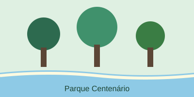
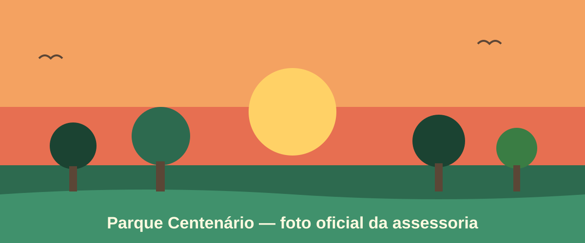
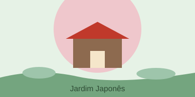
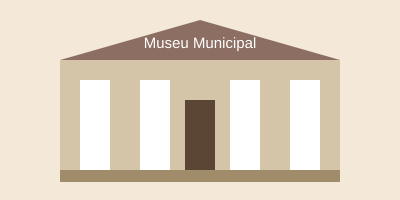
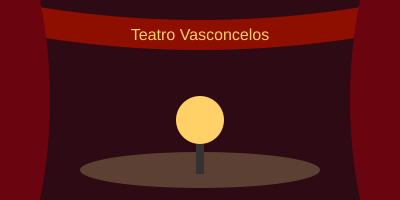

Parque Centenário
Área verde, pista de caminhada e eventos gratuitos.
Guia de Locais
Mogi das Cruzes
Locais, eventos e programação cultural em um só lugar.


Área verde, pista de caminhada e eventos gratuitos.

Trilhas sombreadas, lagos e espaços de contemplação.

Acervo histórico e exposições temporárias.

Espetáculos de teatro, música e dança.